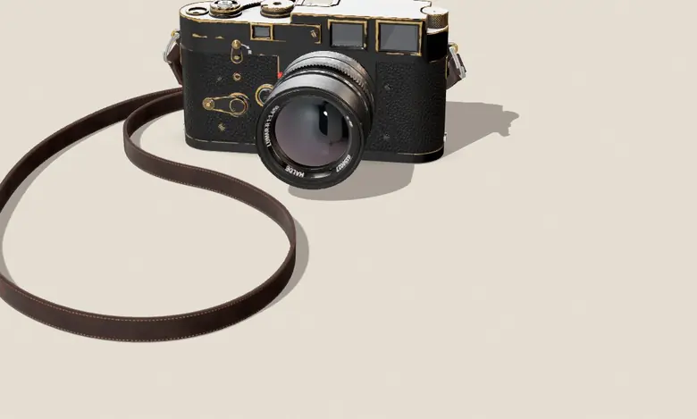

NO. 01 / THE RANGEFINDER STUDY
A camera for
the long look.
Nothing to swipe past. Nothing to miss. Just light, a little patience, and the frame in front of you.
MEET THE R1
HALDE / R1001 — A STUDY IN LOOKING
SCROLL TO EXPLORE
01 / MEET THE OBJECT
Hold a moment.
Let it develop.
The R1 takes its time on purpose. Each line is a reason to stop, each detail an invitation to look twice. This is a fictional camera—and a real object, reworked into a design study.
02 / THE ATELIER
See it
another way.
Change the finish. Study the details. Swipe the object to turn it, or change the light it sits in.
R1THREE VIEWS
ONE INTENTION
ONE INTENTION
01 FRONT ELEMENT, MULTI-COATED02 THREE-LUG BAYONET03 KNURLED SHUTTER DIAL
SWIPE TO ROTATE
03 / SOME THINGS TAKE TIME
Make room
for the moment.
There is no shortcut to seeing. Only the quiet act of paying attention. HALDE began as a question: what would it feel like if a camera asked you to slow down?
HALDE R1 — CONCEPT 17BACK TO THE BEGINNING